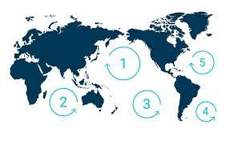

Pollution
There are two types of pollution: chemicals and trash.
Chemical is caused by human activities such as fertilizer leaking into waterways, sewage, and detergent.
Chemicals promote the growth of algae blooms which are bad for the ocean because they deplete the oxygen in water and block sunlight from reaching fish and plants, even after they die.
Marine trash pollution is the accumulation of garbage in the ocean.
Plastic takes hundreds of years to compose .
Fish become tangled and injured in debris, and animals will eat plastic and choke on it.
Small organisms will eat small bits of plastic as well, called microplastic.
These small organisms travel up the food chain and are eaten by other creatures, eventually being eaten by humans.
Humans then have these small microplastics in their stomachs.
Oil is a type of chemical pollution in the ocean, it doesn’t just come from oil spills, it also runs off from rivers, roads, and drainpipes.
Within 30 years, there will be more plastic than fish in the ocean.
There are at least five huge garbage patches in the ocean.
When ocean plastic melts in the sun, the chemicals from the plastic are released into the ocean.
80% of the world’s plastic pollution comes from 20 countries, including the U.S, China, and Indonesia.
Each load of laundry releases over 700,000 microfibers into natural waterways - 85% of beach trash is synthetic microfibers.
70% of garbage in the ocean sinks to the bottom; so it is unlikely to ever be picked up (this does not count the five trash islands either!).
The ocean is filled with dead zones, where the oxygen levels drop so low, life can’t survive - the fish will run away, but plants, crustaceans, etc will die where they are and the area will become an ocean graveyard.
The amount of dead zones has quadrupled since the 1950s.
Noise pollution from ships, etc causes cellular damage to invertebrates (jellyfish, anemones, octopus, etc) - which are all vital foods for tuna, shark, sea turtles, etc.
